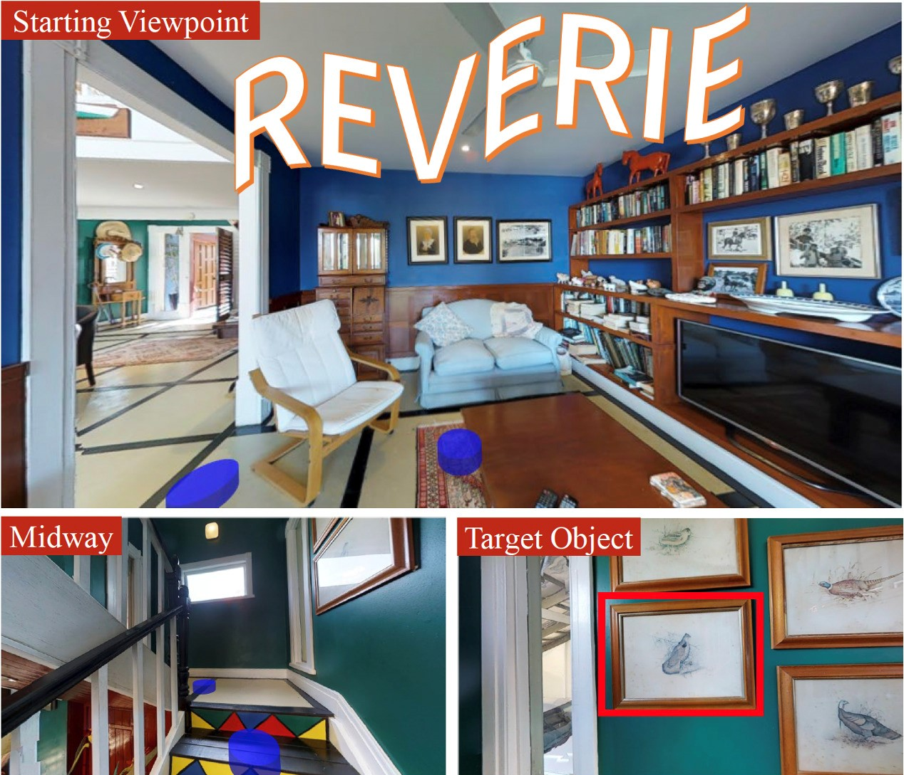

Dong (Carlo) An Mohamed bin Zayed University of Artificial Intelligence (MBZUAI) Email: dong[dot]an[at]mbzuai[dot]ac[dot]ae
|

|
About Me
I'm currently a Postdoctoral Researcher at Mohamed bin Zayed University of Artificial Intelligence (MBZUAI), advised by Prof. Ian Reid. Prior to that, I received the PhD degree from Institute of Automation, Chinese Academy of Sciences (CASIA) in 2024, advised by Prof. Tieniu Tan, Prof. Liang Wang and Prof. Yan Huang. I got the bachelor degree from Peking University (PKU) in 2019. My research interests lie in the intersection of deep learning and robotics, with a focus on Embodied AI and Multimodal Learning.
Publications
-
ETPNav: Evolving Topological Planning for Vision-Language Navigation in Continuous Environments
Dong An, Hanqing Wang, Wenguan Wang, Zun Wang, Yan Huang, Keji He, Liang Wang
IEEE Transactions on Pattern Analysis and Machine Intelligence (TPAMI), 2024. [Paper] [Code]
-
BEVBert: Multimodal Map Pre-training for Language-guided Navigation
Dong An, Yuankai Qi, Yangguang Li, Yan Huang, Liang Wang, Tieniu Tan, Jing Shao
International Conference on Computer Vision (ICCV), 2023. [Paper] [Code]
-
1st Place Solutions for RxR-Habitat Vision-and-Language Navigation Competition
Dong An*, Zun Wang*, Yangguang Li, Yi Wang, Yicong Hong, Yan Huang, Liang Wang, Jing Shao
Room-Across-Room (RxR) Habitat Challenge (CVPR Embodied AI Workshop), 2022. [Paper]
-
Neighbor-view Enhanced Model for Vision and Language Navigation
Dong An, Yuankai Qi, Yan Huang, Qi Wu, Liang Wang, Tieniu Tan
ACM International Conference on Multimedia (ACM MM), 2021. (Oral) [Paper] [Code]
-
Constraint-Aware Zero-Shot Vision-Language Navigation in Continuous Environments
Kehan Chen*, Dong An*, Yan Huang, Rongtao Xu, Yifei Su, Yonggen Ling, Ian Reid, Liang Wang
-
Learning Fine-Grained Alignment for Aerial Vision-Dialog Navigation
Yifei Su, Dong An, Kehan Chen, Weichen Yu, Baiyang Ning, Yonggen Ling, Yan Huang, Liang Wang
AAAI Conference on Artificial Intelligence (AAAI), 2025.
-
Language and Planning in Robotic Navigation: A Multilingual Evaluation of State-of-the-Art Models
Malak Mansour, Ahmed Aly, Bahey Tharwat, Sarim Hashmi, Dong An, Ian Reid
Workshop on Planning in the Era of LLMs (LM4Plan @ AAAI), 2025. [Paper]
-
Memory-Adaptive Vision-and-Language Navigation
Keji He, Ya Jing, Yan Huang, Zhihe Lu, Dong An, Liang Wang
Pattern Recognition (PR), 2024. [Paper]
-
Target-Grounded Graph-Aware Transformer for Aerial Vision-and-Dialog Navigation
Yifei Su, Dong An, Yuan Xu, Kehan Chen, Yan Huang
Aerial Vision-and-Dialog Navigation (AVDN) Challenge (ICCV CLVL Workshop), 2023. [Paper] [Code]
-
Neighbor Regularized Bayesian Optimization for Hyperparameter Optimization
Lei Cui, Yangguang Li, Xin Lu, Dong An, Fenggang Liu
British Machine Vision Conference (BMVC), 2022. [Paper]
-
Landmark-RxR: Solving Vision-and-Language Navigation with Fine-Grained Alignment Supervision
Keji He, Yan Huang, Qi Wu, Jianhua Yang, Dong An, Shuanglin Sima, Liang Wang
Advances in Neural Information Processing Systems (NeurIPS), 2021. [Paper] [Code]
Competitions
|
Aerial Vision-and-Dialogue Navigation Challenge @ ICCV 2023 . Our team susanping (Yifei Su, Dong An, Yuan Xu, Kehan Chen, Yan Huang) is the winner. See details here: Results of AVDN Challenge 2023. |
|
RxR-Habitat Vision-and-Language Navigation Challenge @ CVPR 2022 . Our team Joyboy (Dong An*, Zun Wang*, Yangguang Li, Yi Wang, Yicong Hong, Yan Huang, Liang Wang, Jing Shao) is the winner. See details here: Results of RxR-Habitat 2022. |
|  |
REVERIE Challenge @ CSIG 2022. Our team TouchFish (Dong An, Yifei Su, Shuanglin Sima, Hongyuan Yu, Weichen Yu, Yan Huang) is the runner-up of both channels. See details here: Results of REVERIE Challenge 2022. |
|
Learning and Mining with Noisy Labels Challenge @ IJCAI-ECAI 2022. Our team (Weichen Yu, Hongyuan Yu, Yan Huang, Dong An, Keji He, Zhipeng Zhang, Xiuchuan Li, Liang Wang) is the runner-up of task 1-1 and 2nd runner-up of task 1-2. See details here: Results. |
Professional Activities
Winner invited talk at Embodied AI Workshop @ CVPR 2022
Reviewer: ACM MM'21, IJCAI'23, NeurIPS'23, AAAI'24, CVPR'24, ECCV'24, ACM MM'24, NeurIPS'24, ICLR'25, ICML'25
Honors and Awards
2023, Winner of AVDN Challenge, ICCV 2023 [AVDN Certificate]
2022, Winner of RxR-Habitat Challenge, CVPR 2022 [RxR-Habitat Certificate]
2022, Runner-up of REVERIE Challenge, CSIG 2022 [REVERIE Certificate_1] [REVERIE Certificate_2]
2022, Runner-up of Learning and Mining with Noisy Labels Challenge, IJCAI-ECAI 2022 [Noisy-Labels Certificate]
2021, Outstanding Student of CAS
| Any sufficiently advanced technology is indistinguishable from magic. -- Arthur C. Clarke |
| Next token prediction is actually a much deeper question than it seems. -- Ilya Sutskever |